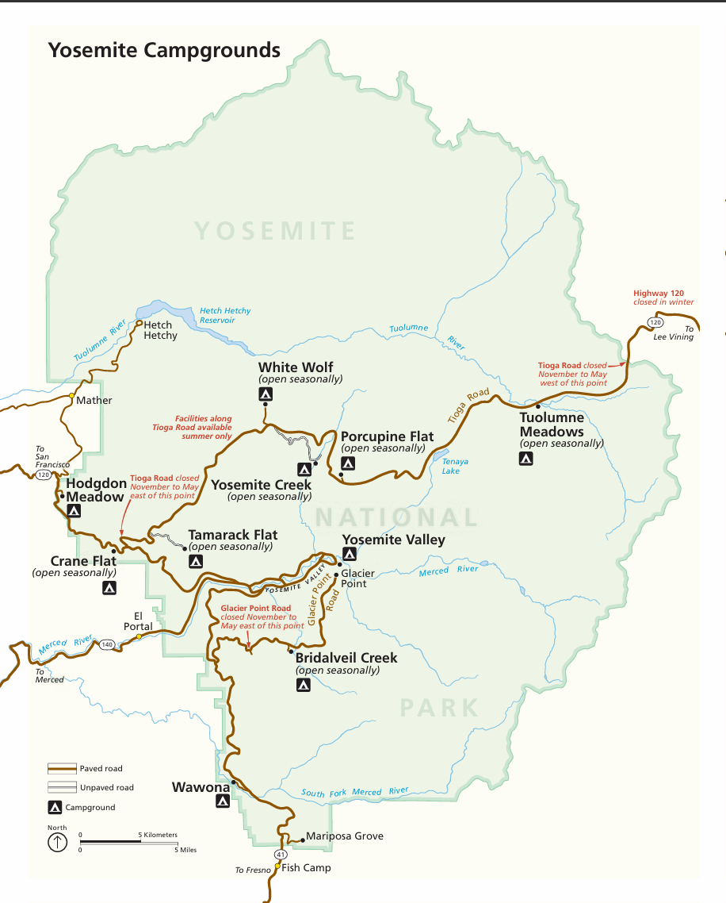

Plan Your Trip
Food Options
Food options in Yosemite National Park are managed by Yosemite Hospitality, and range from groceries to pizza to a fine dining experience at The Ahwahnee. Dining reservations are available 366 days in advance and are highly recommended—especially from spring through fall and during holidays.
- The Ahwahnee Bar: Indoor and outdoor seating available year-round for drinks, hot cocoa, and snacks.
- Curry Village Pizza Patio & Bar: Offers pizza, salads, and drinks for lunch and dinner. Open seasonally with outdoor seating.
Lodging
Lodging options inside Yosemite National Park are also managed by Yosemite Hospitality. Accommodations range from simple tent cabins to deluxe rooms. Reservations are available 366 days in advance and strongly recommended during peak seasons.
- Yosemite Valley Lodge: Located near Yosemite Falls with easy access to dining and attractions. Open year-round.
- Wawona Hotel: A historic Victorian lodge near the Mariposa Grove of Giant Sequoias. Open seasonally.
Yosemite Campgrounds Map
This map shows major campgrounds throughout Yosemite National Park. Note that many are open seasonally, and some roads may be closed from November through May due to snow.
